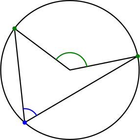
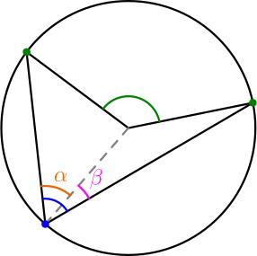
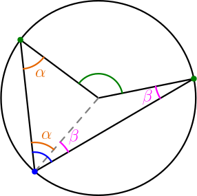
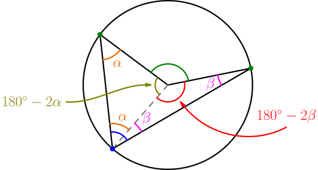
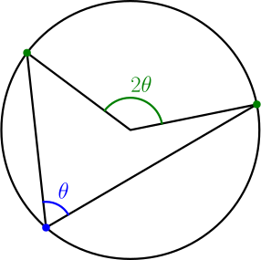
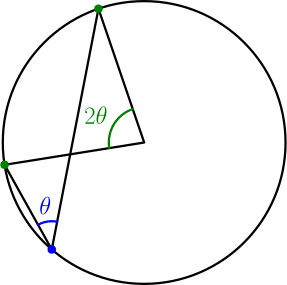
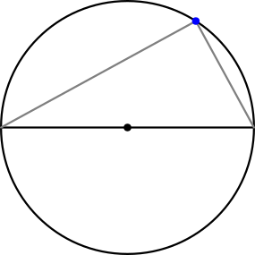
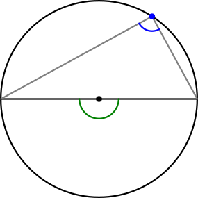

Inscribed Angle Theorem¶
Some people think that this theorem is very useful while others think that it it's very useless. I'll present it to you anyway because I need it for deriving the law of sines.
Pick any three different points along the circumference of a circle. Then draw lines from one point (blue) and the center of the circle to the other two points (green). The lines form angles in the center of the circle and near the blue point.

Our goal is to figure out how the green and blue angles compare to each other. Let's draw another line from the blue point to center.

The blue angle got split into two pieces, $\alpha$ and $\beta$. We also have two triangles whose two sides are the circle radius. Because these triangles have two sides with the same length, they have two angles that are equal (TODO: explain why this works?).

Because the sum of a triangle's angles is $180^\circ$ (TODO), we get the remaining angle of each triangle by subtracting other angles from $180^\circ$.

The sum of all angles drawn to the center of the circle is $360^\circ$, so $$ \begin{align} \green{\text{green angle}} &= 360^\circ - (180^\circ - 2\alpha) - (180^\circ - 2\beta) \\ &= 360^\circ - 180^\circ - 180^\circ + 2\alpha + 2\beta \\ &= 2\underbrace{(\alpha + \beta)}_{\blue{\text{blue angle}}}. \end{align} $$
Consider any three different points of a circle's circumference. Connect two of them to center and the third point with lines. Then the angle in the center of the circle is twice as big as the angle at the third circumference point.

This result is known as the inscribed angle theorem.
The above derivation won't work when the lines connecting each green point to the blue point are on the same side of the center. For example:

The same result still applies, although the derivation for this case looks a bit different.
Example: Thales's theorem¶
Consider a diameter of a circle. Pick any point from the circumference other than the end points of the diameter, and draw lines from the end points of the diameter to that point.

The angle at top looks like it's 90 degrees. This is known as Thales's theorem. To explain why it works, we can use the inscribed angle theorem:

The blue angle is half of the green angle, and the green angle is 180 degrees.